Tayangan · sorotan September
321 rb
58% berasal dari non-pengikut
Aktivasi PosyanCing—terutama materi vaksin gratis di Samarinda, Bandung, dan Makassar—menjadi konten paling menonjol. Akun mencatat sekitar 321 ribu tayangan pada sorotan bulanan; distribusi tayangan didominasi non-pengikut.
*Rasio hitung sederhana dari dua metrik Insight; bukan conversion rate atribusi atau jumlah klik unik.
| # | Konten (judul terpotong di Insight) | Tayangan | Pemirsa | Pengikut | Suka |
|---|---|---|---|---|---|
| 01 | Vaksin gratis — Samarinda | 40,3 rb | 18,1 rb | 72 | 925 |
| 02 | Posyancing hadir lagi — Bandung | 33,1 rb | 15,1 rb | (tidak terlihat) | 289 |
| 03 | Kabar baik / update Pawrents | 31,6 rb | 12,3 rb | (tidak terlihat) | 182 |
| 04 | Vaksin gratis — Bandung | 28,1 rb | 13,6 rb | 30 | 483 |
| 05 | Vaksin gratis — Makassar | 19,3 rb | 9,0 rb | 64 | 334 |
| 06 | Vaksin gratis — Bontang | 9,9 rb | (tidak terlihat) | 6 | 88 |
| 07 | Update Makassar | 8,2 rb | (tidak terlihat) | (tidak terlihat) | 80 |
| Metrik | Postingan | Reel | Cerita |
|---|---|---|---|
| Suka | ≈3,5 rb | 396 | 104 |
| Komentar | 185 | 16 | 0 |
| Posting ulang | 145 | 10 | 0 |
| Simpan | 632 | 15 | — |
| Bagikan | ≈6,9 rb | 466 | 167 |
| Balasan | 0 | 0 | 35 |
Beberapa angka dibulatkan atau tidak terbaca penuh pada screenshot. Dashes berarti metrik tidak ditampilkan untuk format tersebut, bukan nol.
Gunakan seri kota dengan satu template konsisten, judul lokasi yang langsung terbaca, manfaat spesifik, kuota terbatas, dan CTA pendaftaran.
Jaga konten yang mudah dibagikan dan kolaborasi akun lokal. Pantau apakah jangkauan baru berubah menjadi kunjungan profil dan ketukan tautan.
Coba slot 18.00–21.00 pada Senin, Selasa, dan Kamis; bandingkan performa per format dan topik selama beberapa minggu.

Urutan posting ulang menunjukkan materi vaksin Samarinda paling banyak dibagikan ulang: 47 kali. Berikutnya Makassar 14, Bandung 13, dan materi Bandung lainnya 12. Ini sinyal bahwa informasi layanan lokal cukup layak disebarkan ulang oleh audiens.

Panel pengikut mencatat 11.774 pengikut dan pertumbuhan +4,6% sejak 3 September. Grafik yang dipilih adalah “Berhenti mengikuti”; kurvanya berada di wilayah negatif sepanjang periode, dengan penurunan harian paling dalam mendekati −19. Ini jumlah unfollow harian pada grafik, bukan total pengikut bersih.

Grafik “Keseluruhan” menunjukkan pengikut baru harian sebagian besar positif, dengan puncak mendekati 67 pada pertengahan September. Angka kepala panel tetap 11.774 pengikut (+4,6% sejak 3 Sep); grafik hanya memperlihatkan gerak harian, bukan rincian angka tiap tanggal.
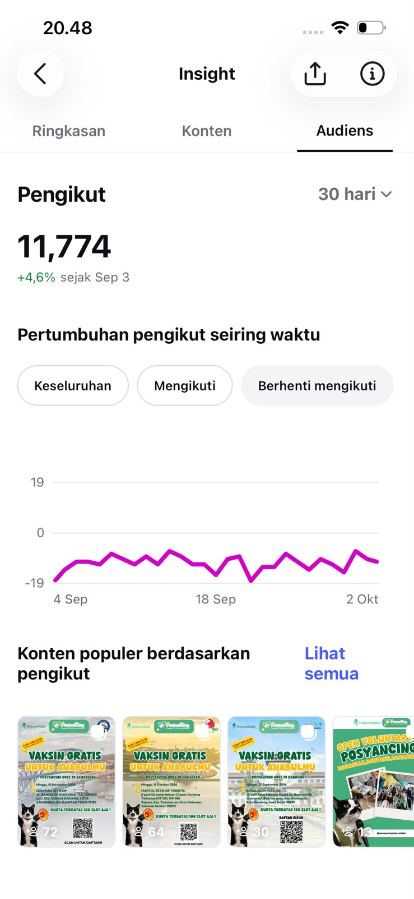
Peringkat simpan: konten Samarinda 173, Bandung 118, dan Makassar 105. Materi Bandung kedua memperoleh 53 simpan. Konten informasi layanan tampak berguna untuk dirujuk kembali—indikasi nilai praktis, bukan bukti langsung pendaftaran.

Posting ulang: Samarinda 47, Makassar 14, Bandung 13, dan Bandung lainnya 12. Urutan ini menguatkan bahwa materi kampanye dengan lokasi dan ajakan yang jelas paling sering diteruskan audiens.

Urutan konten berdasarkan pengikut baru: Samarinda menghasilkan 72 pengikut, Makassar 64, Bandung 30, dan Open Volunteer 13. Materi Samarinda unggul dalam akuisisi pengikut pada daftar yang terlihat.
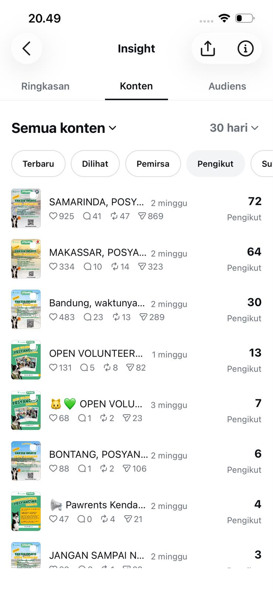
Peringkat komentar dipimpin konten Samarinda dengan 41 komentar, lalu Bandung 23 dan Makassar 10. Konten “Wajah Baru” dan postingan Bandung lainnya masing-masing 9 komentar. Perbedaan ini menunjukkan materi kampanye memicu respons, tetapi jumlah komentar saja belum menunjukkan sentimen atau kualitas prospek.
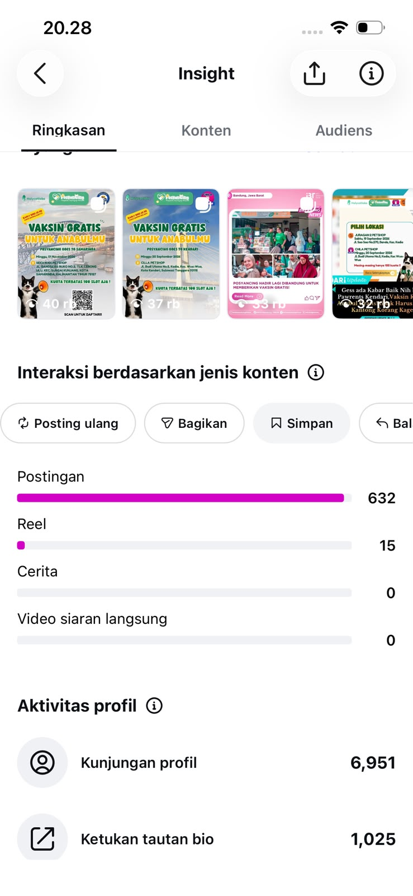
Tangkapan layar daftar konten terbaru berdasarkan tayangan menampilkan beberapa unggahan baru dengan 299, 296, 295, dan 283 tayangan. Sebagian besar berumur 3–6 hari dan interaksi yang tercatat masih sangat rendah; bandingkan secara hati-hati karena usia unggahan belum sama.

Komposisi gender audiens: perempuan 85,1% dan laki-laki 14,9%. Kelompok usia terbesar adalah 25–34 (45,3%), disusul 18–24 (21,7%) dan 35–44 (19,6%); usia 13–17 sebesar 0,4%. Screenshot juga memuat daftar kota/negara, tetapi bagian yang terlihat di sini hanya menunjukkan Uni Emirat Arab dan Singapura masing-masing 0,0%.
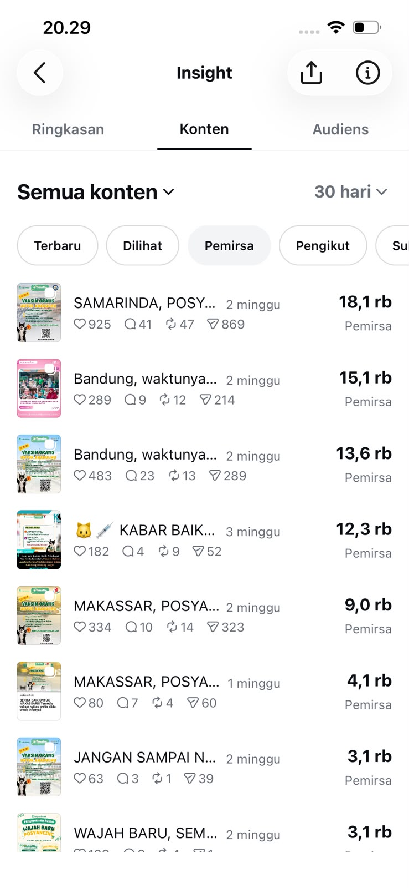
Panel interaksi menampilkan bagikan: postingan sekitar 6,9 rb, Reel 466, Cerita 167, siaran langsung 0. Aktivitas profil: 6.951 kunjungan, 1.025 ketukan tautan bio, dan 0 ketukan alamat bisnis. Postingan menjadi format utama untuk distribusi dan tindakan ke profil.
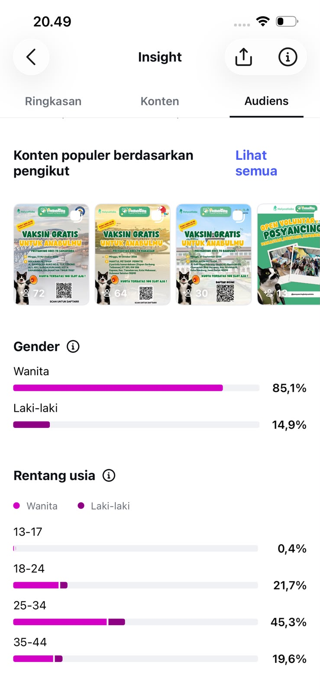
Panel balasan menunjukkan 35 balasan pada Cerita dan 0 pada postingan, Reel, serta siaran langsung. Ini adalah metrik balasan per format pada jendela Insight yang tampil; bukan total percakapan di DM.
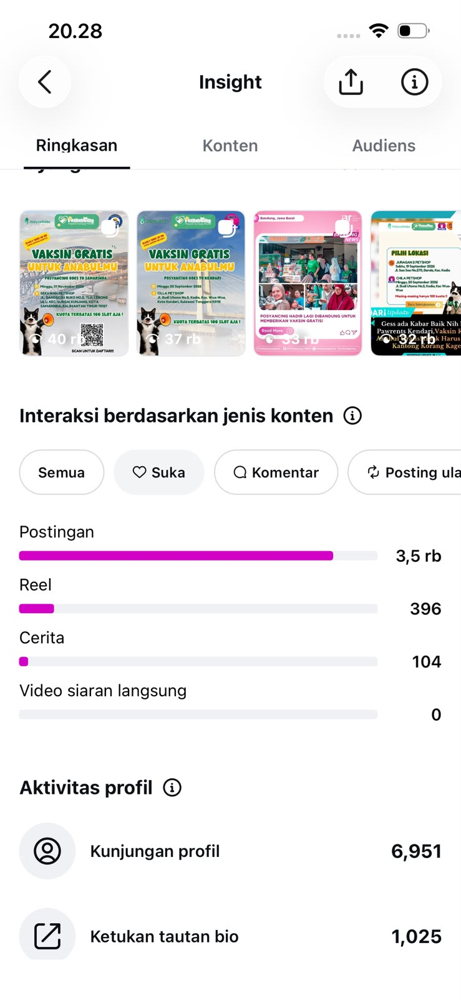
Daftar audiens berdasarkan pemirsa menunjukkan konten Samarinda menjangkau 18,1 rb pemirsa; Bandung 15,1 rb; materi Bandung lainnya 13,6 rb; dan konten Kabar Baik 12,3 rb. Daftar ini mengurutkan pemirsa per konten, bukan tayangan total.
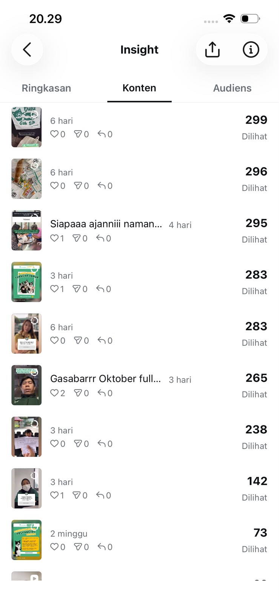
Daftar tayangan konten: Samarinda 40,3 rb, Bandung 33,1 rb, Kabar Baik 31,6 rb, Bandung lainnya 28,1 rb, Makassar 19,3 rb, Bontang 9,9 rb, dan update Makassar 8,2 rb. Materi lokal mendominasi item teratas yang terlihat.
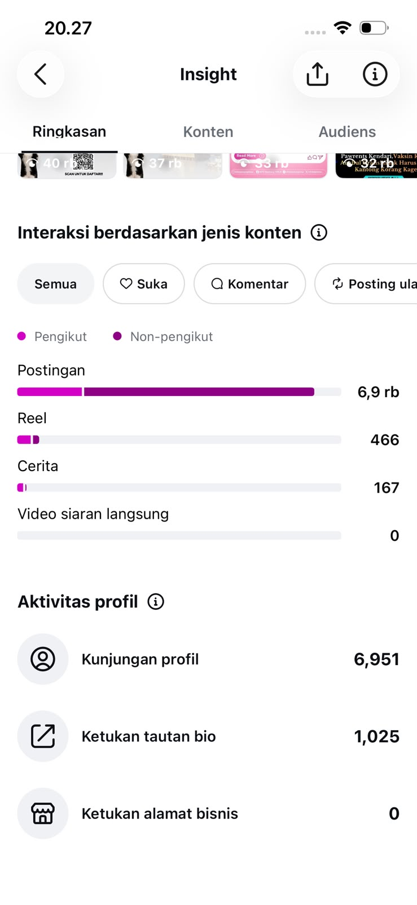
Sorotan bulanan Instagram menyebut 321 rb tayangan, 58% dari non-pengikut, sekitar 11 rb pengikut, serta kenaikan +547 dibanding Agustus. Angka ini merupakan ringkasan sorotan September; jangan disamakan dengan total pada panel Insight 30 hari.
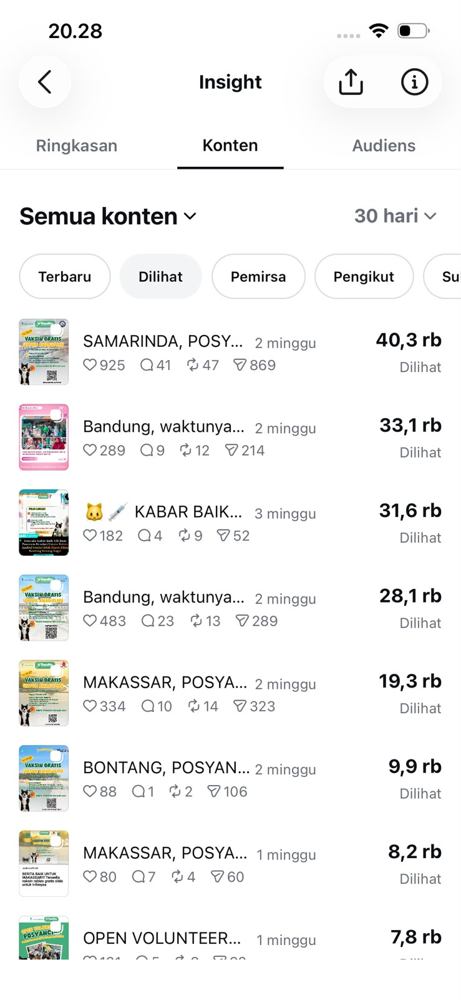
Perbandingan tayangan bulan lalu dengan bulan sebelumnya: Instagram menyatakan tayangan “mirip”/tidak bertambah. Garis September berakhir sekitar 321 rb, sementara garis bulan pembanding sekitar 360 rb. Screenshot menyebut frekuensi berbagi Reel dan postingan tetap konsisten; sumbu grafik tidak menyediakan nilai harian presisi.
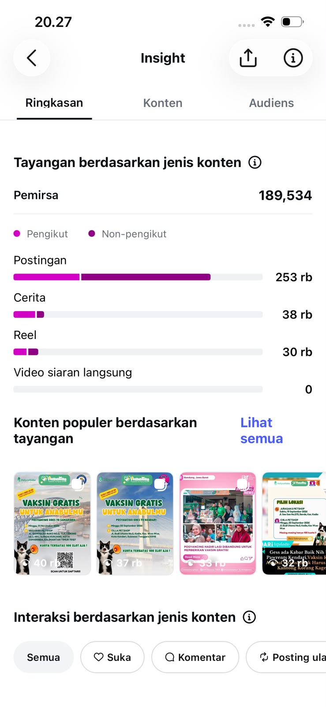
Ringkasan jendela 30 hari menampilkan 767.265 tayangan dan +564 pengikut bersih. Dari tayangan, 17,6% berasal dari pengikut dan 82,4% non-pengikut. Angka total ini berbeda cakupan dari sorotan bulan kalender yang menyebut 321 rb tayangan.
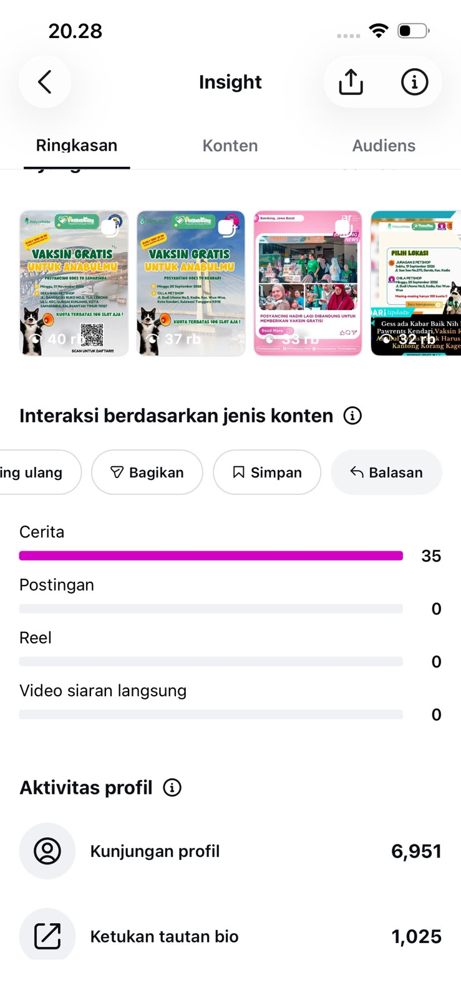
Grafik waktu aktif menunjukkan aktivitas tertinggi sekitar pukul 18.00 pada hari yang dipilih (Minggu). Ringkasan di bawahnya menyebut slot 18.00–21.00 untuk Senin, Selasa, dan Kamis. Gunakan sebagai hipotesis jadwal uji, bukan jaminan performa.
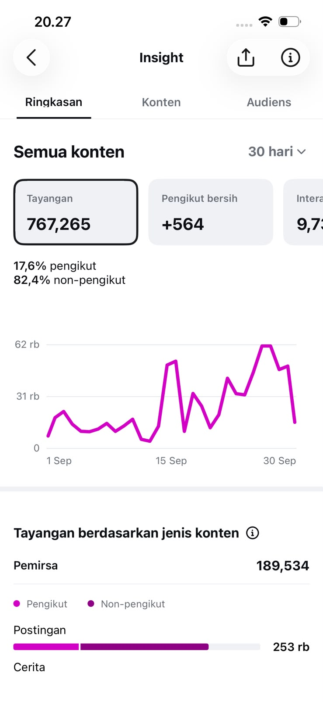
Frekuensi publikasi September: 17 Reel, 14 postingan, dan 70 Cerita. Instagram menyarankan target Oktober 5 Reel dan 3 postingan per minggu. Jadi peluang uji utama adalah menaikkan konsistensi Reel/feed sambil mempertahankan Cerita yang sudah paling sering diterbitkan.
Sorotan untuk satu postingan kampanye vaksin gratis Samarinda menyebut lebih dari 40 rb tayangan dan 72 pengikut baru—lebih tinggi daripada konten lain bulan sebelumnya menurut Instagram. Materi memuat tanggal kegiatan, lokasi, kuota terbatas, dan QR pendaftaran; ini kandidat kuat untuk dijadikan pola kreatif.
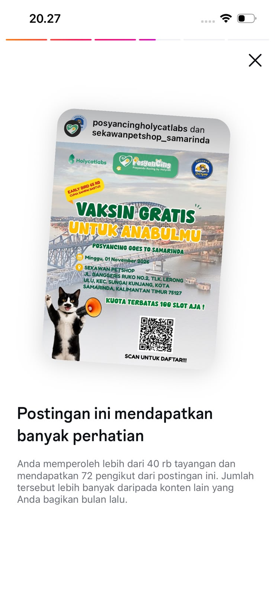
Peringkat suka: Samarinda 925, Bandung 483, Makassar 334, materi Bandung lainnya 289, Kabar Baik 182, Wajah Baru 139, dan Open Volunteer 131. Kampanye vaksin mendominasi tiga posisi teratas.
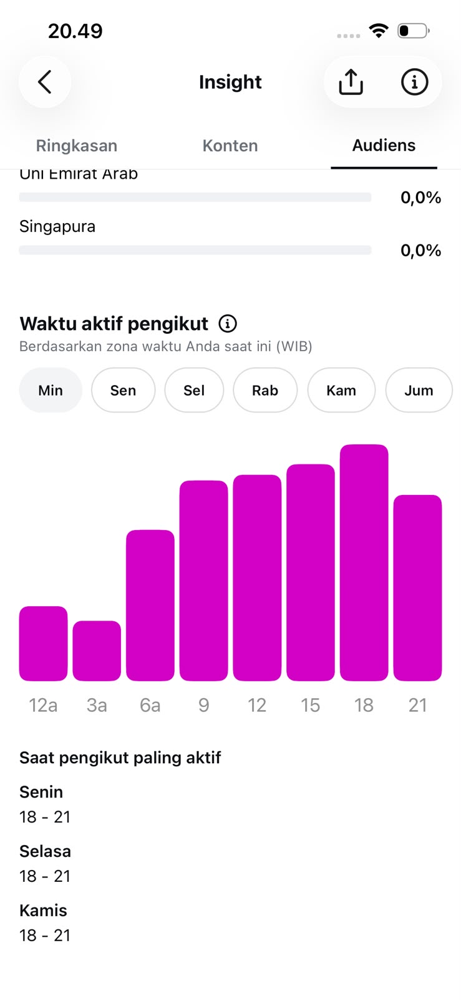
Panel pertumbuhan pengikut dengan tab “Mengikuti” terpilih menunjukkan jumlah akun yang diikuti per hari; grafik mencapai puncak sekitar 79 pada pertengahan September. Ini aktivitas akun mengikuti akun lain, bukan pertumbuhan pengikut masuk.
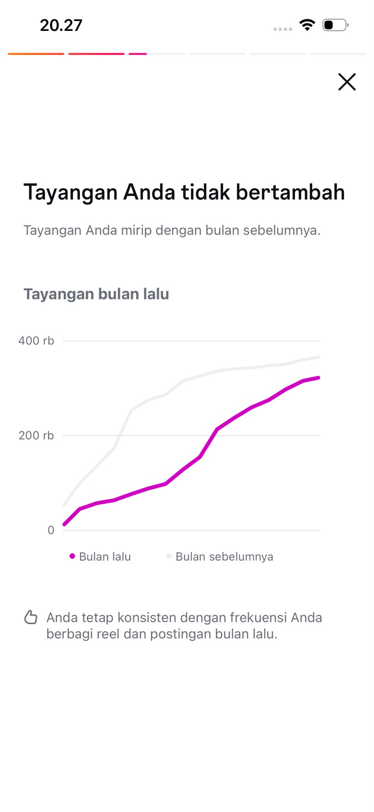
Ringkasan interaksi berdasarkan format menunjukkan suka sekitar 3,5 rb pada postingan, 396 pada Reel, dan 104 pada Cerita; komentar 185, 16, dan 0. Postingan unggul pada dua metrik ini dalam jendela yang ditampilkan.
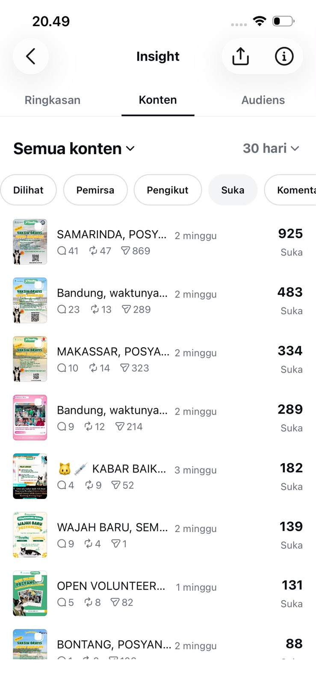
Ringkasan metrik lain: tab “Bagikan” yang dipilih menampilkan sekitar 2,6 rb untuk postingan, 30 untuk Reel, dan 25 untuk Cerita. Kunjungan profil 6.951 dan ketukan tautan bio 1.025. Karena label metriknya Bagikan, angka 2,6 rb tidak boleh dicampur dengan posting ulang.
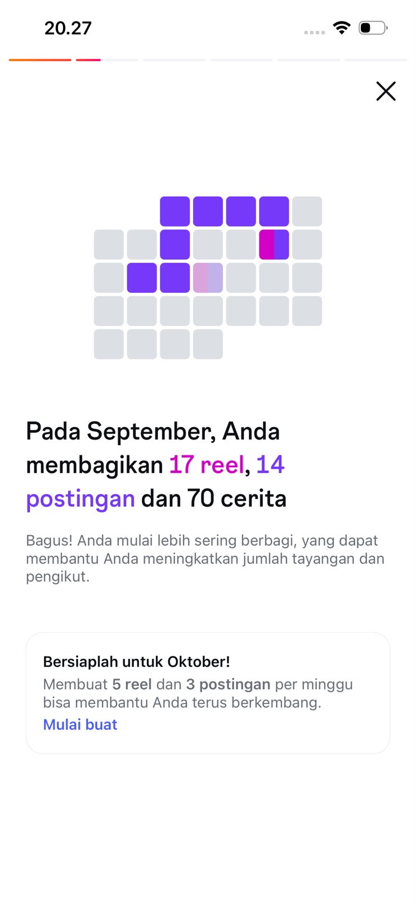
Kreatif unggulan yang ditampilkan adalah promosi “Vaksin Gratis untuk Anabulmu — PosyanCing Goes to Samarinda”, kolaborasi akun Holycatlabs dan Sekawan Petshop Samarinda. Poster mencantumkan kegiatan 1 November 2026, kuota 100 slot, lokasi, serta QR untuk pendaftaran. Konten ini cocok menjadi contoh CTA lokal yang spesifik.
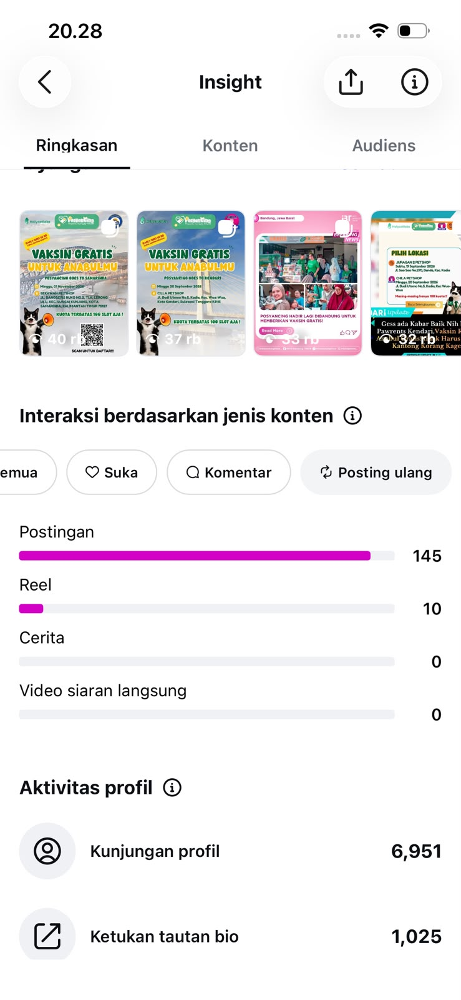
Peringkat posting ulang per format: postingan 145, Reel 10, Cerita 0, siaran langsung 0. Dibanding distribusi tayangan, postingan juga paling kuat dalam mendorong audiens meneruskan konten.
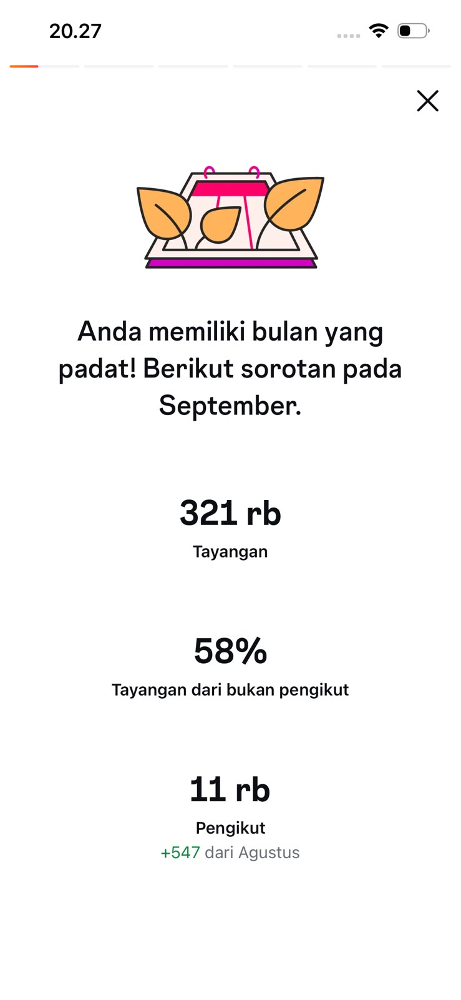
Panel audiens menampilkan empat konten populer berdasarkan pengikut yang diperoleh: Samarinda 72, Makassar 64, Bandung 30, dan Open Volunteer 13. Angka pada thumbnail adalah pengikut yang dikaitkan dengan konten, bukan jumlah suka.
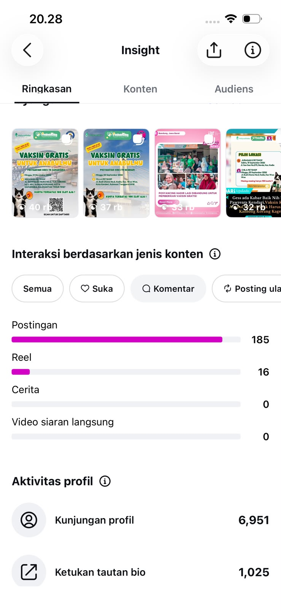
Ringkasan jendela 30 hari: 767.265 tayangan, +564 pengikut bersih, dan interaksi total yang di sisi kanan terpotong sehingga tidak dibaca. Pemirsa 189.534. Tayangan menurut format: postingan 253 rb, Cerita 38 rb, Reel 30 rb, siaran langsung 0; panel juga memperlihatkan konten populer teratas.